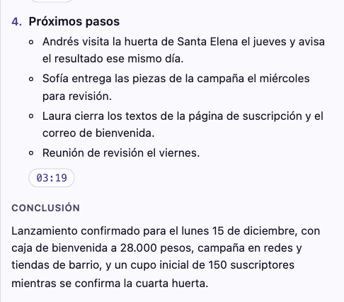
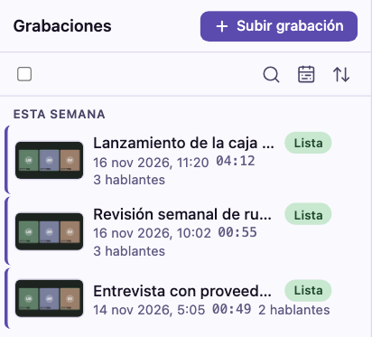
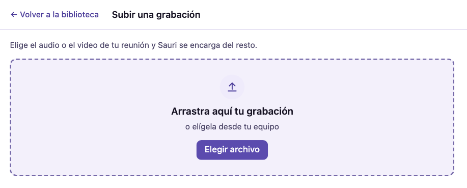

La transcripción sigue al video
Mientras reproduces, la frase que se está diciendo se resalta. Haz clic en cualquier frase para saltar a ese momento.
En desarrollo · acceso anticipado para Mac
Sauri graba la reunión desde una pestaña de Chrome, reconoce quién habló y te deja un resumen en borrador para revisar. La grabación no sale de tu equipo.

Cómo funciona
Abre la extensión, elige la pestaña de la reunión y pulsa grabar. Funciona con Google Meet y con cualquier reunión que tengas abierta en el navegador.

Sauri separa las voces y pone cada intervención a nombre de su hablante. Si no reconoce una voz, la deja como «Hablante 2» hasta que tú le pongas nombre, y la próxima vez la recuerda.

Recibes un borrador con el asunto principal, los puntos clave y los próximos pasos. Tú lo lees, lo ajustas y decides qué compartir.


Lo que puedes hacer
Mientras reproduces, la frase que se está diciendo se resalta. Haz clic en cualquier frase para saltar a ese momento.

Tu biblioteca ordena las grabaciones por fecha, con búsqueda y filtros.

¿Grabaste con otra herramienta? Sube el archivo y Sauri lo procesa igual.
Descarga el video, la transcripción o el resumen.
Crea plantillas para que cada tipo de reunión tenga el resumen que necesitas.
Toma notas durante la grabación; quedan junto a la reunión, separadas de la transcripción.
Privacidad
Sauri hace el trabajo pesado en tu Mac: transcribir, reconocer voces y resumir. No hace falta subir tus reuniones a la nube.
Las grabaciones, las transcripciones, los resúmenes y los nombres que asignas a cada voz.
Si prefieres que un servicio externo haga una tarea, por ejemplo el resumen, lo conectas tú y solo para esa tarea. Ese servicio recibe lo que necesita para hacerla.
Al activar un servicio externo, Sauri te muestra qué sale del equipo y hacia dónde, y te pide confirmarlo.
Descargar
Instala la app en tu Mac y agrega la extensión de Chrome para grabar tus reuniones. Después, Sauri busca versiones nuevas y te pregunta antes de instalarlas.
Archivo para Mac de unos 259 MB.
Esta es la huella SHA-256 del archivo. Si sabes usar la Terminal, compárala con la que da shasum -a 256 sobre el archivo descargado.
Sauri todavía no está verificado por Apple, así que la primera vez macOS te pide confirmar que quieres abrirlo.
Mira los cinco pasos para abrirloCon ella grabas la pestaña de la reunión. Se conecta sola con Sauri en tu Mac, sin correo ni contraseña.
Disponible pronto en Chrome Web StorePrimera vez
Sauri todavía no está verificado por Apple. Por eso, la primera vez macOS te pide confirmar que quieres abrirlo. Solo lo haces una vez.
Haz doble clic en el archivo que descargaste. En la ventana que se abre, arrastra el ícono de Sauri a la carpeta Aplicaciones.
Abre Sauri desde la carpeta Aplicaciones. macOS te avisa que no puede comprobar la app y no la abre todavía. Cierra el aviso, sin mover Sauri a la Papelera.
Abre el menú Apple (arriba a la izquierda) y elige «Configuración del Sistema». En algunos Mac se llama «Ajustes del Sistema». En la barra lateral, haz clic en «Privacidad y seguridad» y baja hasta la parte «Seguridad».
Junto al aviso sobre Sauri verás ese botón; en algunos Mac dice «Abrir igualmente». Si macOS te vuelve a preguntar, elige la misma opción. El botón aparece durante cerca de una hora después del paso 2; si ya no está, repite ese paso.
Escribe la contraseña con la que entras a tu Mac y haz clic en «OK». Sauri se abre y, desde ahora, lo abres con doble clic como cualquier otra app.
Abre Sauri y, en su menú, elige «Desinstalar Sauri…». Te pregunta aparte qué hacer con tus carpetas de grabaciones; si no eliges nada, se conservan.
Si Sauri ya no abre: arrástralo desde la carpeta Aplicaciones a la Papelera. Luego, en el Finder, elige el menú «Ir» → «Ir a la carpeta…», escribe ~/Library/Application Support/Sauri y mueve esa carpeta a la Papelera. Haz lo mismo con ~/Library/Logs/Sauri. Tus carpetas de grabaciones siguen donde las elegiste; bórralas tú si ya no las quieres. Para quitar la extensión, ábrela en la página de extensiones de Chrome y quítala.
Lo usamos a diario y lo mejoramos cada semana, pero todavía no es una versión final. Hoy funciona en Mac con Apple silicon y con Google Chrome.
No. Sauri las procesa en tu Mac. Solo sale algo si tú conectas un servicio externo para una tarea, y Sauri te avisa antes.
Cualquier reunión que tengas abierta en una pestaña de Chrome, como Google Meet. También puedes subir grabaciones que ya tengas.
Sí. Pide permiso antes de grabar, como harías con cualquier grabadora.
Un Mac con chip de Apple (M1 o posterior) y macOS 14 Sonoma o posterior, además de Google Chrome para grabar. Los detalles están en Descargar.
Porque Sauri todavía no está verificado por Apple. Puedes abrirlo igual siguiendo los pasos para la primera vez; solo lo haces una vez.
La aplicación está en español e inglés, y transcribe reuniones en esos idiomas.
Sauri es un nombre propio, corto y fácil de decir. Su significado está en el logo: dos voces distintas y, en el centro, lo que Sauri conserva de la conversación para que puedas encontrarlo y revisarlo después.
Sí. Puedes renombrar a cualquier hablante en cualquier momento, y Sauri usa tus correcciones en tus siguientes reuniones.